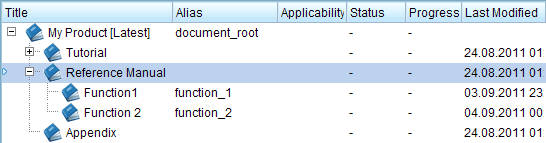
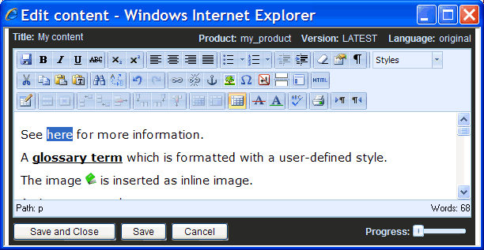
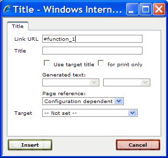
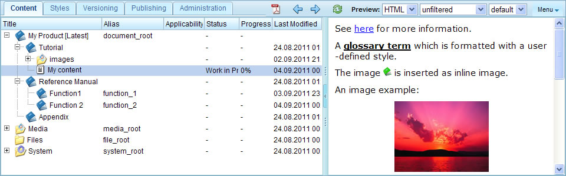
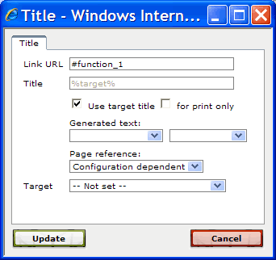
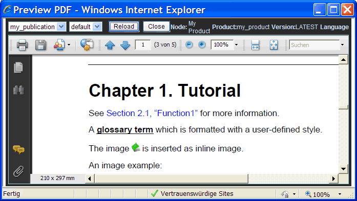
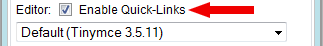
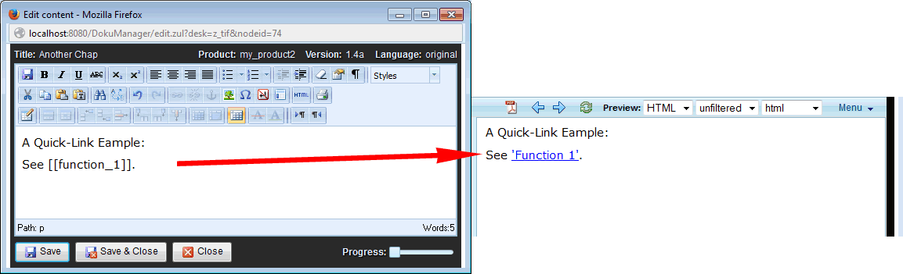
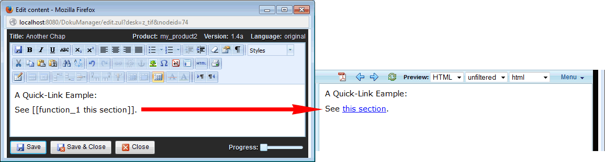

1.4.1. Referencing sections
As an example we will insert a link into the content-node of the "Tutorial" section. This link shall reference sections in the "Reference Manual". Therefore, first create two sections named "Function 1" and "Function 2" as sub-sections of the "Reference Manual" section. When a link is created, the target of the link is identified by the target's alias name. Hence, also enter the alias names "function_1" and "function_2" for the created sub-sections as shown in the following screenshot:

Figure 1.4.1. Example sections
Now, open the content-editor for the content-node in the "Tutorial" section. Add the sentence "See here for more information" to the content. The word "here" shall now be transformed into a link that references the "Function 1" section. To do this, select the word "here":

Figure 1.4.2. Selecting the link text
Then click the "Insert/edit link" button ( ). The following dialog pops up:
). The following dialog pops up:

Figure 1.4.3. The link dialog
You now have to enter into the URL field the target address of the element you want to reference. If you want to reference an element within the product documentation (i.e. create an internal link), then the target URL must have the following format:
#<alias_or_id>
where <alias_or_id> is the alias name or the ID of the element you want to reference. In our example we want to reference the section "Function 1" which has the alias name "function_1", therefore enter the text "#function_1" into the URL field. Finally, click the "Insert" button to create the link. The word "here" should now be rendered as a link.
To see if the link works, save the content and close the content-editor. The preview-area should be automatically updated and display the added sentence with the link:

Figure 1.4.4. Preview the inserted link
When you click on the link in the preview-area, the section "Function 1" should be opened in the preview-area.
Unfortunately the text "here" is not very descriptive. You first have to follow the link to see what's behind. Furthermore when you print the document on paper, you cannot click the link and the text "here" does not help at all. Therefore, during the publication export process, Docmenta can replace the link text by the title of the referenced target. Whether the link text shall be replaced by the target's title or not has to be set for each link.
Proceed as follows to enable the link text replacement: Open the content-node which contains the link in the content-editor. Then place the cursor within the link element (i.e. the word "here") and click the "Insert/edit link" button () to open the link-dialog. Check the "Use target title" checkbox to enable the automatic link text replacement as shown in the following screenshot:

Figure 1.4.5. Enabling the link text replacement
If you want the link text to be replaced only for print output (i.e. PDF) then also check the "for print only" checkbox. Click the "Update" button to accept the settings and to close the dialog.
Note: The listboxes below the "Use target title" checkbox allow you to control whether the automatic generated link text shall also include the chapter number and page number.
To see if the automatic link text replacement works, save the content-node and close the content-editor. The preview-area should be automatically updated. As you notice, the link text is still "here". This is, because the link text replacement is only done during publication export, but not for HTML preview. However, you can check the link text replacement by previewing the publication in PDF format. Therefore, select the root node of the publication and click the PDF preview button ( ). This opens a PDF preview of the selected node in a new window:
). This opens a PDF preview of the selected node in a new window:

Figure 1.4.6. Preview link text replacement
As you can see, the link text in the PDF includes the section number and title of the referenced section (in our example: "Section 2.1, Function 1").
Notice that the links within the PDF are active links, i.e. when you click on the link, the PDF viewer will jump to the page where the target element is located. Of course the links can only be active links, in case the link target is contained within the generated PDF file. The same is true for the link text replacement, which is by default only applied, if the link target is part of the generated publication.
In Section 1.11.2, “Inline inclusions” you will see a possibility to render the title of the referenced section as part of the link text, even in case link text replacement is not applied for the link. Furthermore, Docmenta provides a mechanism called inter-publication links, which allows link-text replacement to be applied for inter-publication links as well. See Section 1.13.5, “Inter-publication links” for details.
Quick-Links
Instead of manually creating a link as described above, you can enable Quick-Links to allow faster creation of section-links. If the Quick-Links option is enabled you can just type the text [[sect_alias]] to create a link to the section identified by alias sect_alias. When saving the content, the pattern [[...]] is automatically transformed to a link.
To enable Quick-Links, edit your user profile by clicking the "Profile" button () in the head-panel. In the opened dialog, check the "Enable Quick-Links" checkbox and click "Okay" to close the dialog:

Figure 1.4.7. Enabling Quick-Links in the user profile
Now that you have enabled Quick-Links, you can test the new feature by creating a link to the section identified by alias function_1. Therefore, open the previously edited content node and add a new paragraph containing the text "See [[function_1]]" as shown in the following screenshot:

Figure 1.4.8. Creating a Quick-Link
After the content has been saved you will notice that in the preview window the text [[function_1]] has been replaced by a link. Furthermore the displayed link text is the title of the referenced section. Note that for the exported publication, the link text may also include the chapter number and/or page number, depending on the output configuration.
If you do not want the link text to be the title of the referenced node, but want to display a fixed text, then you can achieve this by creating the Quick-Link in the format [[alias link text]]. For example, if you want to create a link to the section function_1, but display the fixed link text "this section", then create the Quick-Link as follows:
[[function_1 this section]]

Figure 1.4.9. Creating a Quick-Link with fixed text
For more information on Quick-Links see Section 2.3.8.9, “Quick-Links”.